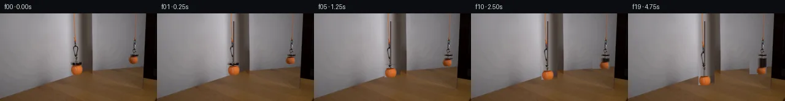

![首帧]()

Round 00
2026-11-06T00:40:15.955982+00:00像素候选变化代码 +245/−0inspection 更新
pixels 617205f5a62ca068 · code 80ef2a8676defa5a
查看本轮 generate.py 真实 diff
--- previous/generate.py
+++ current/generate.py
@@ -0,0 +1,245 @@
+#!/usr/bin/env python3
+"""generate.py — 20 frames (256×144) at 4 fps, 5 s.
+Tennis ball attached to a magnet hanging from an orange cord is slowly lowered in front of a mirror.
+Frame 00 exactly matches first_frame.png.
+"""
+
+import numpy as np
+from PIL import Image
+from pathlib import Path
+import sys
+
+# ---------------------------------------------------------------------------
+# Load first frame
+# ---------------------------------------------------------------------------
+workspace = Path(__file__).resolve().parent
+frame0 = np.array(Image.open(workspace / "first_frame.png")).astype(np.uint8)
+assert frame0.shape == (144, 256, 3), f"Bad shape: {frame0.shape}"
+
+H, W = 144, 256
+N_FRAMES = 20
+
+# ---------------------------------------------------------------------------
+# Define regions and constants
+# ---------------------------------------------------------------------------
+CORD_ANCHOR_ROW = 13 # topmost cord pixel
+CORD_BOTTOM_ROW = 85 # where cord meets magnet (row of top of magnet)
+BALL_TOP_ROW = 85 # top of tennis ball
+BALL_BOTTOM_ROW = 100 # bottom of tennis ball
+MAGNET_TOP_ROW = 78 # top of magnet
+REFL_TOP_ROW = 70 # top of reflected ball area
+REFL_BOTTOM_ROW = 82 # bottom of reflected ball area
+
+# Columns for the main ball/magnet/cord region
+MAIN_COL_LEFT = 115
+MAIN_COL_RIGHT = 141
+
+# Columns for the reflected ball/cord region
+REFL_COL_LEFT = 198
+REFL_COL_RIGHT = 226
+
+# Columns for the cord only (narrow, at center)
+CORD_COL_LEFT = 119
+CORD_COL_RIGHT = 124
+
+# Total descent over 20 frames (pixels)
+TOTAL_DESCENT = 18
+
+# ---------------------------------------------------------------------------
+# Compute per-frame displacements (linear)
+# ---------------------------------------------------------------------------
+displacements = np.linspace(0, TOTAL_DESCENT, N_FRAMES) # float
+# Frame 0 has displacement 0
+
+# ---------------------------------------------------------------------------
+# Build background reference: for each column, what's behind the movable objects?
+# We sample from rows just above the magnet (rows 68-77) which show the
+# wall/mirror transition without the ball/cord/reflection.
+# ---------------------------------------------------------------------------
+def build_background_column(ref_rows, ref_cols, src):
+ """For each column in ref_cols, return the background color sampled from ref_rows."""
+ bg = np.zeros((len(ref_rows), len(ref_cols), 3), dtype=np.uint8)
+ for j, c in enumerate(ref_cols):
+ bg[:, j, :] = src[ref_rows, c, :]
+ return bg
+
+# Main region background: sample from rows 68-77 (above magnet/ball)
+BG_REF_ROWS_MAIN = list(range(68, 78))
+BG_REF_COLS_MAIN = list(range(MAIN_COL_LEFT, MAIN_COL_RIGHT))
+
+# Reflection region background: sample from rows 64-69 (above reflected ball)
+BG_REF_ROWS_REFL = list(range(64, 70))
+BG_REF_COLS_REFL = list(range(REFL_COL_LEFT, REFL_COL_RIGHT))
+
+# ---------------------------------------------------------------------------
+# Frame generation
+# ---------------------------------------------------------------------------
+frames = np.zeros((N_FRAMES, H, W, 3), dtype=np.uint8)
+frames[0] = frame0.copy() # frame 00 is exact copy
+
+for t in range(1, N_FRAMES):
+ d = displacements[t]
+ d_int = int(round(d))
+ d_frac = d - d_int # not used for now; just use nearest-neighbor shift
+ shift = d_int
+
+ if shift == 0:
+ frames[t] = frame0.copy()
… diff truncated; 158 more lines …